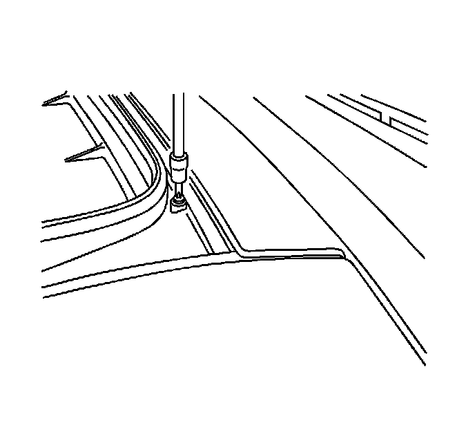
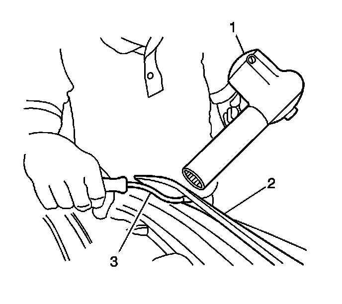
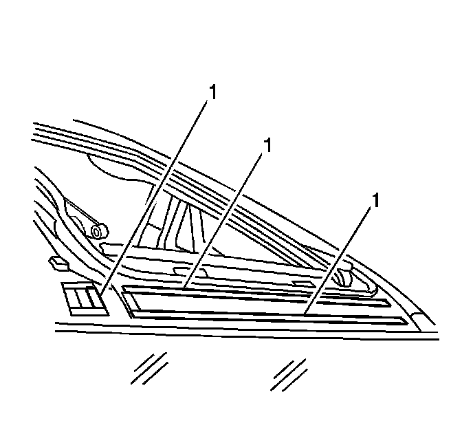
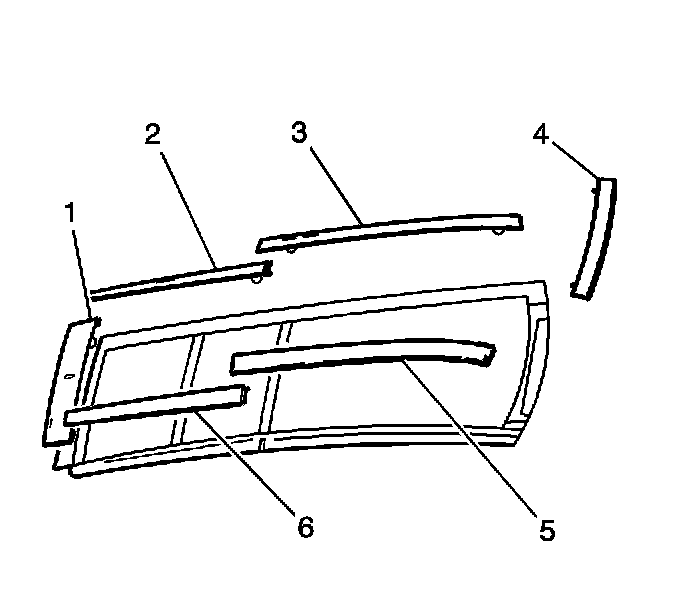

Sunroof Exterior Trim Cover Replacement (Front)
Sunroof Exterior Trim Cover Replacement (Front)
Tools Required
J 25070 Heat Gun
Removal Procedure
1. Open the front sunroof window approximately 350 mm (14 in) in order to access the retention screws on the front trim panel.

2. Remove the screws that retain the front trim cover.

3. Use J 25070 (1) to heat the trim panel (2) in order to release the double-sided foam tape.
4. Use a medium-sized prying tool (3) to release the trim cover from the sunroof frame.

5. Remove the trim cover from the sunroof frame.
6. Use 3M(R) General Purpose Adhesive Cleaner P/N 08984 or equivalent to remove all traces of the adhesive foam tape (1) from the sunroof frame.
7. Use 3M(R) Automotive Adhesion Promoter Wipes P/N 06396 or equivalent to thoroughly wipe down the sunroof frame where you will apply the trim cover.
Installation Procedure

Important: The ambient temperature of the building should be above 16°C (60°F) to ensure correct adhesion of the trim cover panel.
1. Using J 25070 warm the sunroof frame to 21°C (70°F).
Important: Pull the backing from the trim cover tape just prior to installation. Do NOT touch the adhesive with your hands or allow the tape to come into contact with dirt or foreign matter. Do NOT let the tape come into contact with the sunroof frame before you align the trim cover to the screw inserts.
2. Carefully align the cover tabs to the screw inserts in the frame.
3. Lower the front trim cover (1) to the frame.
4. Use moderate hand pressure to ensure proper adhesion of the double-sided foam tape.
Notice: Refer to Fastener Notice (Fastener Notice) .
5. Install the screws to the front trim cover.
Tighten the screws to 5 N.m (44 lb in).
6. Close the front sunroof window.